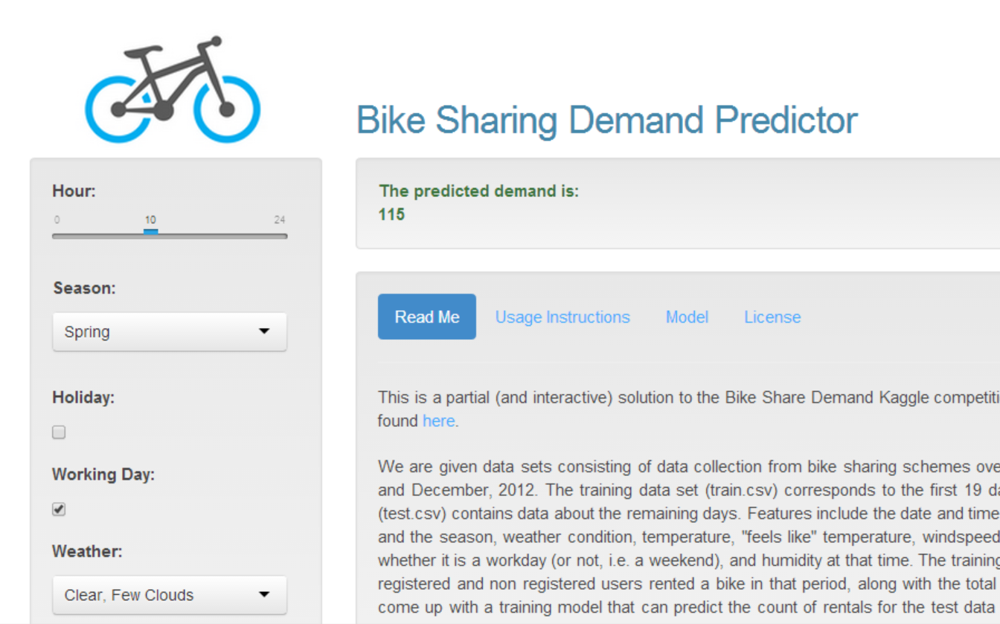

Your browser doesn't support the features required by impress.js, so you are presented with a simplified version of this presentation.
For the best experience please use the latest Chrome, Safari or Firefox browser.
An interactive predictor for bike share demand with near instant results.

Generalised linear model trained with 10886 data points, and 8 features; covering two years.
summary(fit)
##
## Call:
## glm(formula = count ~ ., data = input)
##
## Deviance Residuals:
## Min 1Q Median 3Q Max
## -317.3 -96.2 -31.2 54.7 684.9
##
## Coefficients:
## Estimate Std. Error t value Pr(>|t|)
## (Intercept) 33.62310 8.57580 3.92 8.9e-05 ***
## hour 7.57569 0.21683 34.94 < 2e-16 ***
## season 21.68954 1.35264 16.03 < 2e-16 ***
## holiday -8.05895 8.78449 -0.92 0.359
## workingday -0.00854 3.14177 0.00 0.998
## weather -2.73841 2.49580 -1.10 0.273
## atemp 6.49796 0.17598 36.93 < 2e-16 ***
## humidity -2.24853 0.09071 -24.79 < 2e-16 ***
## windspeed 0.44628 0.18651 2.39 0.017 *
## ---
## Signif. codes: 0 '***' 0.001 '**' 0.01 '*' 0.05 '.' 0.1 ' ' 1
##
## (Dispersion parameter for gaussian family taken to be 21826)
##
## Null deviance: 357172914 on 10885 degrees of freedom
## Residual deviance: 237402231 on 10877 degrees of freedom
## AIC: 139665
##
## Number of Fisher Scoring iterations: 2
App: Shiny Apps - http://ashic.shinyapps.io/bikeshare/
Source Code: Github - https://github.com/ashic/bikeshare-data-product/
Use a spacebar or arrow keys to navigate